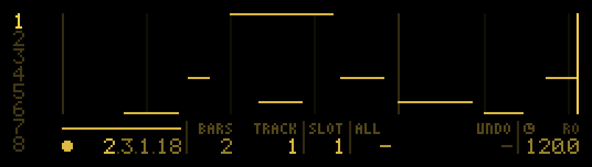

Record a one-bar loop
For this one-bar bass line, use the looper’s internal clock. Connect a keyboard or sequencer sending notes on MIDI channel 1 and a synth or software instrument receiving on channel 1. Use a controller with buttons assigned to the looper’s track, slot and transport controls. The looper records the MIDI performance. Your receiving instrument supplies the sound.
- Arm a slot for recording. From the performance screen, tap track 1, then tap an empty slot on that track. Check TRACK and SLOT on the OLED. A pulsing record circle means the slot is record-armed.
- Start the transport. Tap global PLAY/STOP (MIDI note number 39 on channel 16). Recording begins on the downbeat. The circle becomes solid and the playhead moves. With internal clock, you can also start by tapping the armed slot again.
- Play the bass line. Count four beats as you play. The piano roll shows each note and BARS shows the length of the take in bars.
- Finish the take. Tap REC as the next downbeat arrives. Your loop plays back from the first beat. Let it repeat once. When you are ready to add notes, another tap of REC starts an overdub.

Which bar ends the take?
For a one-bar take, aim for beat 1 of bar 2. If you tap REC up to two beats after that downbeat, the loop can still end at the bar line you just passed. Later in the bar, the looper waits for the next downbeat. The same half-bar allowance applies after each complete bar.
Record while other parts play
While the transport runs, select another track and tap an empty slot. If that track is stopped, the armed take starts on the next downbeat. If that track is playing a loop, the take starts when its loop repeats. To punch in sooner on the playing track, tap the armed slot a second time. The countdown above the song position shows when recording will begin.
Only one track records or overdubs at a time. Finish that take before recording the next one. The other tracks continue playing.
If the loop looks right but sounds silent
If the piano roll shows notes, match the instrument’s receive channel to the track’s MIDI output channel on the OLED. Track 1 plays on channel 1, track 2 on channel 2, and so on. Check whether the track is muted or another track is soloed. If the piano roll is empty, check that your keyboard sends notes on a channel from 1 to 12. Channels 13–16 carry the looper’s controls.
To keep the loop after switching off, enable card saving during setup and wait for the save to finish. RO on the OLED means the looper is still in read-only mode.